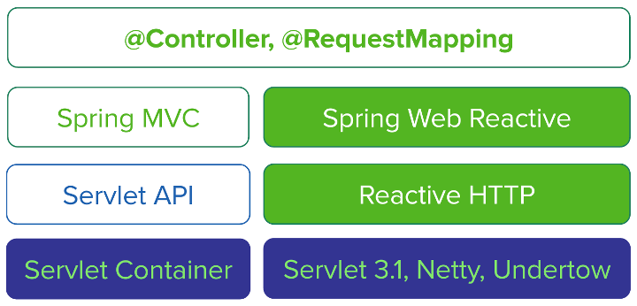

Feign 的未来
10.8 新特性
Feign 10.8引入了一个新的构建器 AsyncFeign ，允许方法返回 CompletableFuture 个实例。在10.8之前 Feign 都是同步的。
interface GitHub {
@RequestLine("GET /repos/{owner}/{repo}/contributors")
CompletableFuture<List<Contributor>> contributors(@Param("owner") String owner, @Param("repo") String repo);
}
public class MyApp {
public static void main(String... args) {
GitHub github = AsyncFeign.builder()
.decoder(new GsonDecoder())
.target(GitHub.class, "https://api.github.com");
// Fetch and print a list of the contributors to this library.
CompletableFuture<List<Contributor>> contributors = github.contributors("OpenFeign", "feign");
for (Contributor contributor : contributors.get(1, TimeUnit.SECONDS)) {
System.out.println(contributor.login + " (" + contributor.contributions + ")");
}
}
}Spring WebClient
WebClient 是一个异步非阻塞网络请求客户端，在 Spring 5 中引入，属于 spring-web-reactive 的一部分。
